✨ Edição Especial para Salões & Nail Designers
Domine o seu Sistema de Gestão
& Agendamento Profissional
Guia visual completo com telas reais e simulações passo a passo. Aprenda a eliminar furos na agenda, automatizar confirmações no WhatsApp, fidelizar clientes com o Clube VIP e gerenciar faturamento e custos com tranquilidade.
Assim que você abre o aplicativo, a Tela Inicial apresenta um raio-X completo do seu dia: atendimentos agendados, previsão de faturamento, total já recebido em Pix/Cartão e avisos urgentes de confirmação.
Tela Real: Dashboard Inicial do Salão
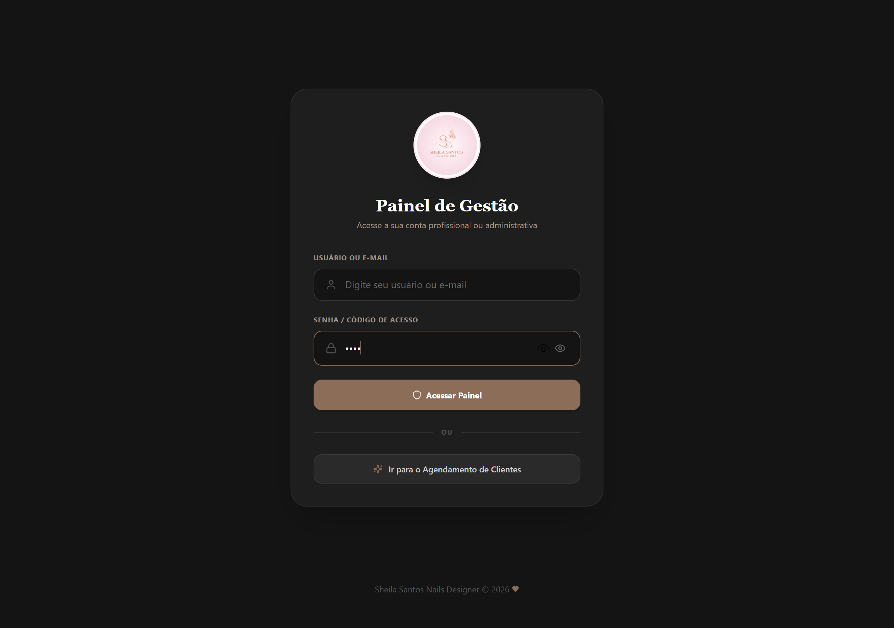
- 💵 Faturamento de Hoje: Exibe o montante exato recebido e o valor que ainda falta receber.
- ⏰ Próximos Horários: Card dinâmico com o nome da cliente, procedimento e horário exato da cadeira.
- ☁️ Nuvem Sincronizada: Indicador verde garantindo que seus dados estão 100% salvos no banco seguro.
- 🔔 Central de Avisos: Notificações de novos agendamentos feitos pela internet pelas suas clientes.
A Agenda é o coração do seu trabalho diário. Para facilitar ao máximo a sua rotina na bancada, a cor de cada card corresponde exatamente à cor cadastrada para aquele procedimento (ex: Alongamentos em roxo, Manutenções em rosa, Banho de Gel em azul, Esmaltação em terracota). Assim, você bate o olho no calendário e identifica instantaneamente quais procedimentos serão realizados no dia! O status da cliente (Confirmado, Pendente, Concluído) é sinalizado com clareza pelo selo no canto direito do card.
Tela Real: Agenda Semanal com Cores dos Serviços e Selos de Atendimento
🎨
Cores Personalizadas por Serviço
Cada procedimento cadastrado possui sua própria cor de destaque para você bater o olho e identificar de imediato se o próximo horário é alongamento, manutenção ou cutilagem.
🏷️
Selos Claros de Situação
A situação do agendamento (Confirmado, Pendente, Concluído ou Falta) é informada pelo selo no canto direito do card, mantendo o controle total da presença.
⏱️
Duração e Intervalo Calculados
O aplicativo bloqueia o tempo correto na grade de acordo com os minutos cadastrados no serviço, eliminando atrasos acumulados e correria na bancada.
🚫
Bloqueio Anti-Conflitos
O sistema impede automaticamente a marcação de duas clientes no mesmo horário, tanto em agendamentos manuais quanto nos feitos pelas clientes pelo link online.
Quando uma cliente liga, manda mensagem ou já está sentada na sua cadeira querendo agendar a próxima manutenção, basta tocar no botão "+ Novo Agendamento":
Simulação Real: Modal de Novo Agendamento
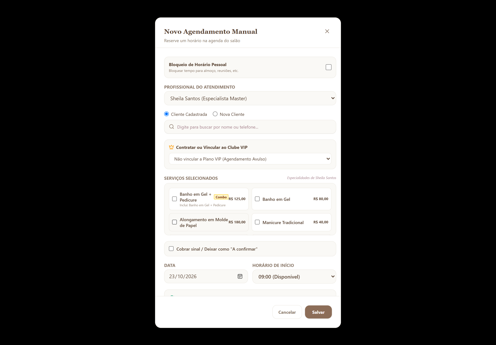
1
Selecione a Cliente
Digite as primeiras letras do nome ou selecione na lista. Se for cliente nova, você cadastra na hora com apenas o nome e WhatsApp.
2
Escolha o Procedimento
Selecione o serviço desejado. O sistema preenche o preço e calcula o tempo de duração da cadeira automaticamente.
3
Defina o Profissional e Horário
Escolha a designer responsável e o horário. O sistema avisa se houver choque de horário com outro atendimento.
💡
Dica para Manutenções
Ao terminar o atendimento de uma cliente, já agende o retorno dela para dali a 20 ou 25 dias antes de ela ir embora. Isso garante 100% de ocupação na sua agenda do mês seguinte!
Você recebe um link exclusivo de agendamento (ex: .../#agendar?salao=seu-salao). Você coloca esse link na Bio do Instagram, no botão do WhatsApp e nos Stories.
Tela Real: Visão da Cliente no Agendamento Online
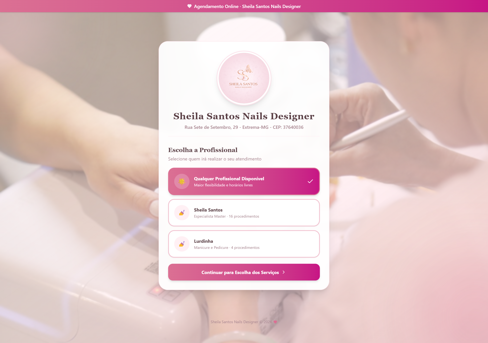
Como a cliente agenda sozinha pelo celular:
1
Escolha da Profissional
A cliente escolhe com quem deseja ser atendida ou seleciona "Qualquer Profissional Disponível".
2
Seleção dos Procedimentos
Visualiza fotos dos alongamentos, esmaltação ou spa dos pés, com tempo e valor transparentes.
3
Dias e Horários Livres
O robô consulta a sua agenda em tempo real e exibe apenas os horários realmente disponíveis.
4
Sinal Pix Automático
Se o sinal estiver ativado, a cliente vê a chave Pix e o QR Code na hora para garantir a vaga.
🛡️
Blindagem Contra Furos (No-Shows)
A exigência de sinal Pix (ex: R$ 30,00 ou R$ 50,00) reduz os cancelamentos de última hora em mais de 90%. As clientes que pagam sinal sempre comparecem!
Além do agendamento direto, seu salão conta com um Catálogo Digital Completo (ex: .../#catalogo?salao=seu-salao). É perfeito para enviar quando alguém pergunta "Quais serviços você faz e quanto custa?".
Tela Real: Catálogo Vitrine com Fotos dos Procedimentos
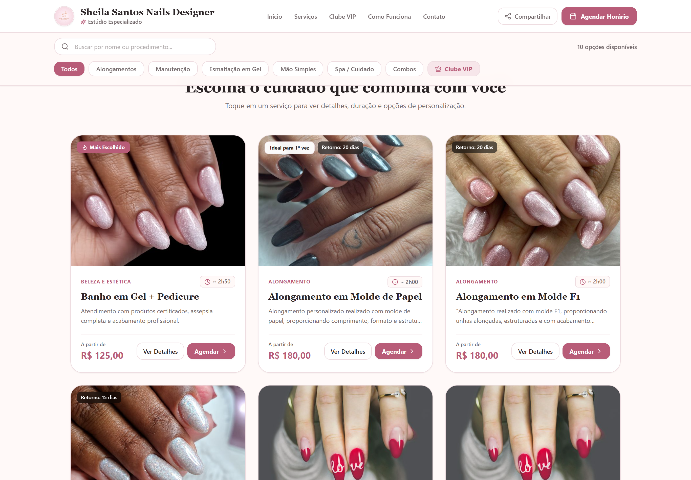
- ✨ Apresentação Elegante: Fotos de alta definição dos seus trabalhos em Molde F1, Fibra e Gel.
- ⏱️ Estimativa de Cadeira: A cliente já sabe quanto tempo o procedimento leva, evitando pressa na bancada.
- 🏷️ Filtros por Categoria: Alongamentos, Manutenções, Banho em Gel, Esmaltação e Spa dos Pés.
- 👑 Seção do Clube VIP: Planos mensais em destaque para incentivar adesões recorrentes.
No menu Clientes, você tem uma central de relacionamento com toda a sua carteira de clientes organizada, com busca instantânea por nome ou telefone.
Tela Real: Carteira e Lista Completa de Clientes
- 🔍 Busca Instantânea: Localize qualquer cliente digitando apenas uma parte do nome ou número.
- 🎂 Aniversariantes: O sistema destaca quem faz aniversário hoje para você enviar um carinho no WhatsApp.
- 📱 WhatsApp Direto: Toque no ícone verde para iniciar uma conversa sem precisar salvar o contato na agenda do celular.
- 👑 Selo VIP: Identificação visual de quais clientes são assinantes do Clube VIP.
Cada cliente possui um prontuário técnico exclusivo. Você registra o formato predileto, se tem alergias a monômeros ou esmaltes, características da lâmina ungueal e colhe a assinatura touch na tela do próprio celular!
Tela Real: Ficha de Anamnese Digital com Assinatura Touch
💅
Formato Preferido
Quadrada, Almond, Stiletto, Bailarina ou Oval. Você nunca mais precisa perguntar qual formato ela prefere.
⚠️
Alergias e Condições
Histórico de alergias a produtos químicos, descolamentos recorrentes, micose ou unhas roídas.
✍️
Assinatura na Tela
A cliente assina com o dedo na tela, declarando ciência dos cuidados necessários para a garantia.
📷
Antes & Depois
Guarde fotos reais das unhas em cada visita para comprovar o crescimento e a evolução da estrutura.
Manter uma cliente fiel é 5 vezes mais barato do que conquistar uma nova. Na aba "Clientes Sumidas", o sistema faz uma varredura automática e localiza quem não faz manutenção há 30, 45 ou 60 dias sem agendamento futuro:
Tela Real: Radar de Clientes Sumidas com Botão de Resgate
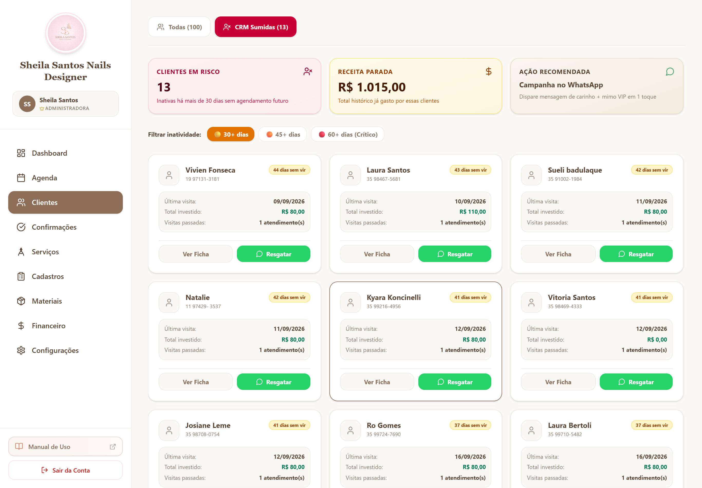
💌
Resgate no WhatsApp em Um Toque
Ao tocar no botão "Resgatar no WhatsApp", o app gera uma mensagem carinhosa já personalizada com o nome da cliente e um cupom exclusivo para ela voltar nesta semana. Você resgata faturamento parado sem esforço!
No menu Serviços, você cadastra todos os procedimentos com seus respectivos valores, tempo de bloqueio na agenda e taxa de reserva Pix:
Tela Real: Gestão de Serviços e Preços

- ⏱️ Duração Precisa: Se um alongamento leva 2h30 e uma manutenção 1h30, a agenda bloqueia exatamente esses minutos.
- 💳 Preço e Sinal: Configure se aquele serviço exige sinal e qual o valor (fixo ou porcentagem).
- 📸 Foto do Procedimento: Carregue fotos dos seus trabalhos para ilustrar a vitrine online.
- ⭐ Destaque no Catálogo: Marque quais serviços você deseja promover no topo da vitrine.
Muitas profissionais cobram sem saber quanto gastam de material. O menu Materiais permite calcular o custo real por gota de gel, primer e lixa, além de gerenciar a venda de produtos balcão (home care):
Tela Real: Estoque de Materiais, Custos e Produtos para Venda
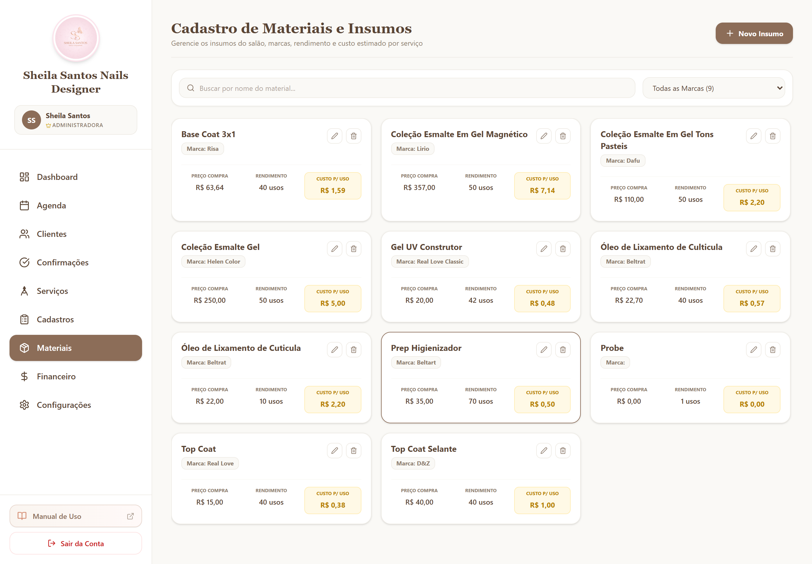
🧪
Custo por Procedimento
Cadastre o rendimento dos seus frascos de gel e preparadores. O sistema calcula automaticamente o custo de insumos por cliente.
🛍️
Produtos para Venda (Home Care)
Óleos de cutícula, cremes para as mãos, lixas de bolsa e esmaltes. Lance a venda rápida no caixa para aumentar seu ticket médio.
📦
Alerta de Estoque Mínimo
O sistema avisa quando um material essencial está perto do fim para você nunca ficar sem insumo no meio da semana.
O Clube VIP é a ferramenta mais poderosa para estabilizar o caixa do salão. Em vez de depender da vontade da cliente marcar, você vende um plano mensal onde ela paga um valor fixo e tem direito aos procedimentos do mês:
Tela Real: Planos de Assinatura e Clube VIP
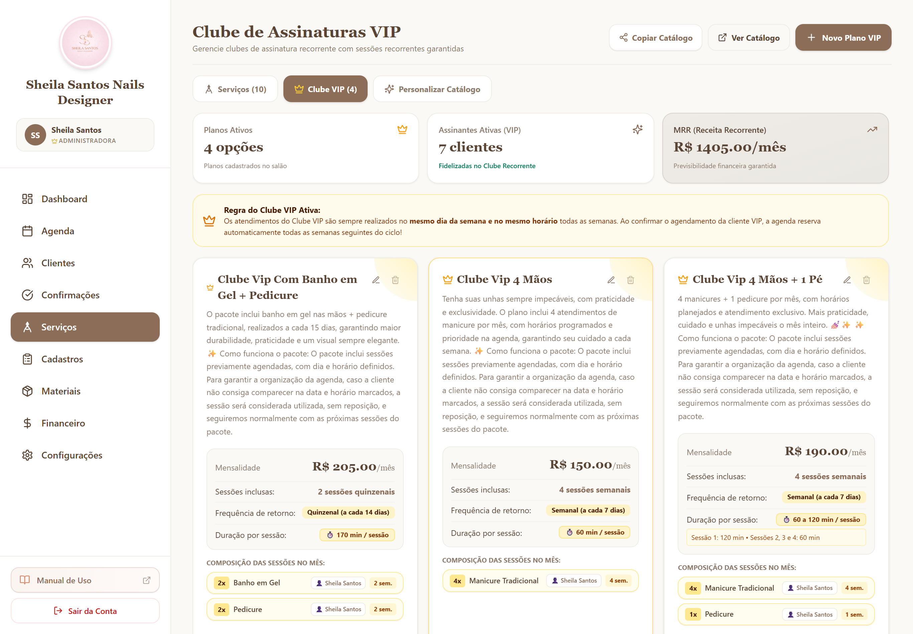
- 👑 Plano Manicure Semanal: 4 atendimentos no mês por um valor fixo mensal (ex: R$ 150/mês).
- 💎 Plano Manutenção de Alongamento: 2 manutenções mensais com garantia contra quebras (ex: R$ 190/mês).
- ✨ Controle de Saldo: Ao agendar uma cliente VIP, o sistema desconta automaticamente do saldo do plano dela.
- 📈 Salário Previsível: Com 30 assinantes no clube, você inicia o mês com mais de R$ 4.500 garantidos na conta!
No fim de cada tarde, abra a aba Confirmações. O sistema reúne todas as clientes agendadas para amanhã com um botão verde do WhatsApp ao lado de cada uma:
Tela Real: Painel de Confirmações do WhatsApp
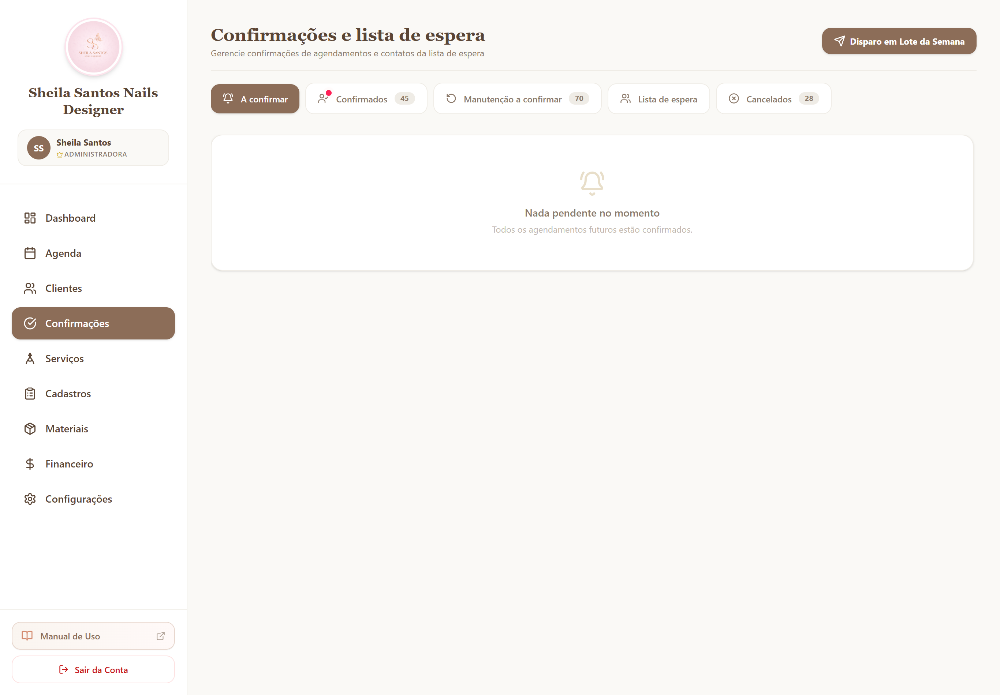
Como funciona na prática:
1
Clique no Ícone Verde
O aplicativo abre o WhatsApp da cliente com a mensagem oficial já escrita contendo nome, procedimento, dia e hora.
2
Link de Confirmação em 1 Toque
A mensagem inclui um link onde a própria cliente clica e confirma a presença diretamente no sistema.
3
Status Verde na Agenda
Assim que a cliente responde ou clica no link, a agenda atualiza para o status verde de Confirmado.
Diga adeus às contas no papel de pão e caderninhos. No menu Financeiro, você acompanha o faturamento bruto, custos com materiais, despesas fixas e o lucro líquido real do salão:
Tela Real: Dashboard Financeiro e Comissões de Equipe
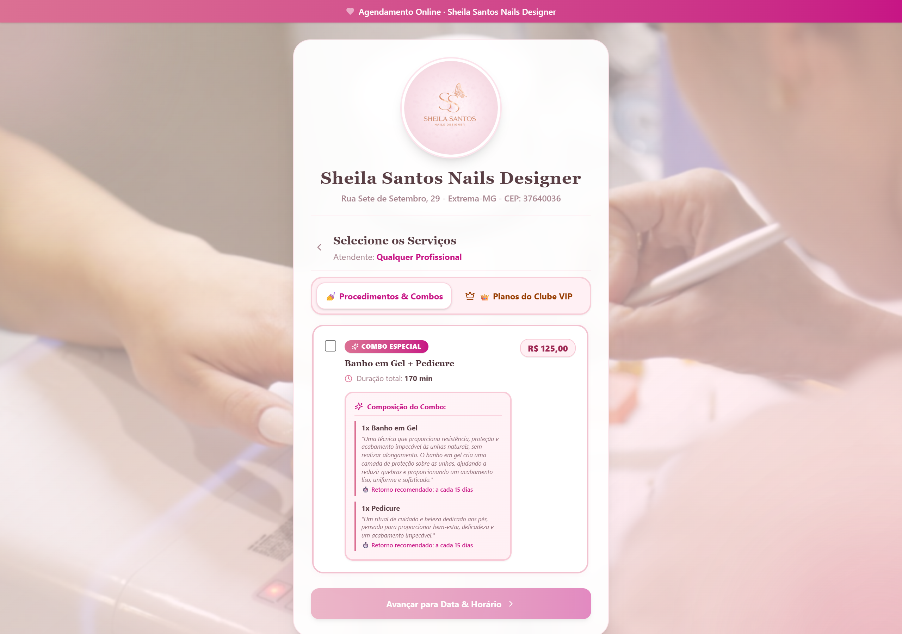
- 📊 Divisão por Forma de Pagamento: Total recebido em Pix, Cartão de Crédito, Débito e Dinheiro.
- 🔮 Previsão de Receita: Cálculo exato de quanto você vai faturar até o final do mês com base nos horários já marcados.
- 👥 Comissões Automáticas: Se você possui colaboradoras ou parceiras, o sistema divide a porcentagem exata de cada uma (ex: 50/50 ou 60/40) sem risco de erro humano.
- 📉 Lançamento de Despesas: Registre aluguel, luz, compra de brocas e géis para enxergar seu lucro líquido real.
Ao abrir seu link de acesso pela primeira vez, o sistema guia você através de um fluxo intuitivo e seguro de 3 passos de boas-vindas:
1️⃣ Passo 1: Escolha do Aplicativo Conforme seu Sistema Operacional
O sistema identifica automaticamente o dispositivo que você está usando (celular Android, iPhone ou computador Windows) e destaca a versão recomendada com instalador oficial:
Tela Real: Seleção de Instalação Multiplataforma (#instalar)
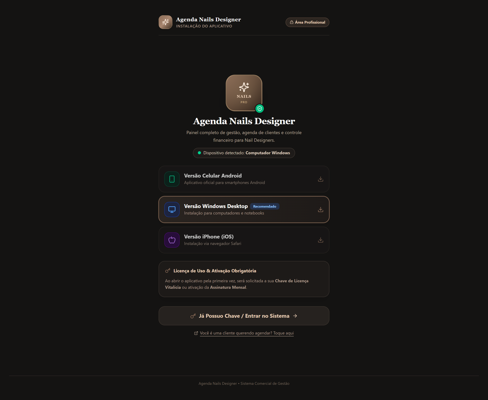
2️⃣ Passo 2: Inclusão da Chave de Acesso Oficial (Código VIP)
Para proteger seu sistema contra pirataria e vincular seus dados com segurança ao seu salão, a tela de ativação solicita a sua Chave de Licença Oficial recebida na compra:
Tela Real: Ativação da Chave de Licença VIP
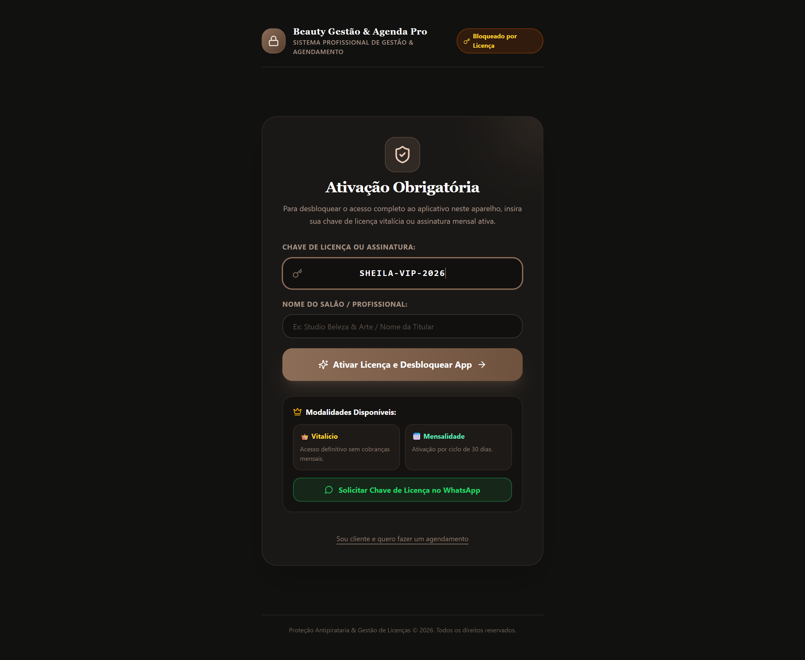
🤖
Versão Celular Android
Basta tocar em "Instalar aplicativo" ou pelo Chrome nos 3 pontinhos > "Adicionar à tela inicial". O ícone oficial do seu salão ficará fixado direto na tela do celular.
🍎
Versão iPhone (iOS / Safari)
Abra o link no Safari, toque no botão Compartilhar (quadrado com seta para cima), role para baixo e toque em "Adicionar à Tela de Início".
💻
Versão Windows Desktop
Baixa o atalho executável direto para a sua área de trabalho do computador, abrindo o sistema em janela dedicada sem barras de navegação.
🔑
Passo 3: Login e Gestão
Após validar o Código VIP, a tela de login solicita seu e-mail e senha cadastrados. Pronto! Seu painel completo é liberado para atendimento.
1
Coloque o Link na Bio do Instagram
Mais de 70% dos agendamentos online acontecem à noite ou aos domingos, enquanto você descansa. Deixe o link acessível sempre.
2
Cobre o Sinal sem Vergonha
O sinal Pix valoriza seu tempo e afasta pessoas descompromissadas. Quem paga sinal comparece ou avisa com antecedência.
3
Confirmações na Véspera às 17h
Dedique 3 minutos no fim da tarde para clicar no botão de confirmação das clientes de amanhã na aba Confirmações.
4
Anamnese e Cuidados na Primeira Visita
Preencher a ficha técnica e colher a assinatura da cliente transmite autoridade profissional de alto padrão.
5
Ofereça o Clube VIP
Apresente o Clube de Assinaturas para suas melhores clientes. Elas economizam e você garante receita garantida todo início de mês.